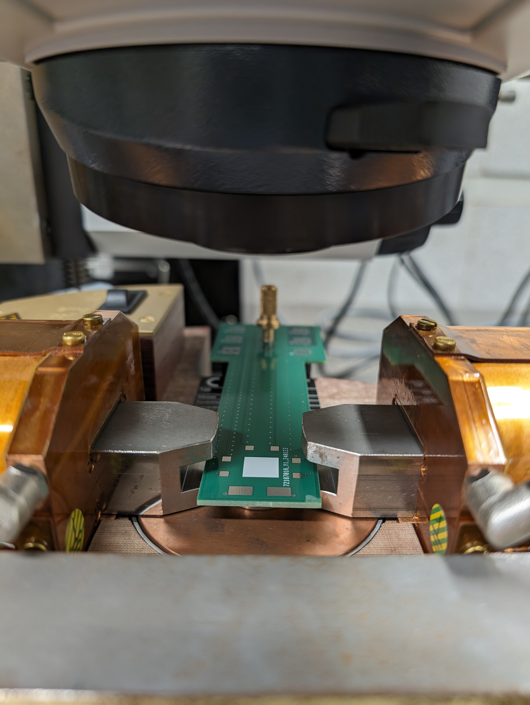

Completed on: 2024-03-10
Here we see using Fusion 360 (I do not recommend for EDA -- use KiCAD) the Schematic, Layout, and 3D Model of the PCB I designed. Technically, I'm cheating here showing you the v2 models since they aren't quite different than v1 but I digress.


Here we can see the PCBv1 mounted in the MOKE system in the place of the piezostage (well attached to the piezostage in lieu of the sample holder). A few things to note is that while it did mount successfully, apparently nobody told me measure twice cut once (I had not taken the machine shop course yet to be fair). As we take a look at the center photo we can clearly see that where the sample is supposed to lay its not exactly centered between the poles of the magnet. While this wouldn't make the PCB useless, it severely limits where we can put our devices on the sample. The final nail in the coffin (and to be fair I always knew I would need a v2 since this was just a test of the rough idea of the design) was that the PCB finish was regular old HASL when we need ENIG to be able to wirebond too. Luckily, this gave me the perfect chance to test if I did my math correctly for the waveguides and if we could send pulses down in the high MHz regime (our awg is limited to 120MHz). So I shoddly mounted a resistor as a test sample and tested its capabilites and was pleasetnly surprised when I got the exact same signal out on the scope. So armed with this knowledge and hopefully a better understanding of how to measure distances I set my sights on v2 to remedy the mistakes of v1.


Here in v2 I tighted up the tolerances around the mounting holes as well as changed the finish. NOTE: NEED TO TAKE PHOTO OF COMPLETED AND ADD HERE. I tested the wirebondability of the PCB and was pleased that I could in fact wirebond to it. The order specifications were -- Gold Thickness: 2U" -- which may have helped.
This is one of the first PCB project I was tasked with in the lab. Honestly quite a more difficult first PCB task than I originally envisioned but it was a great learning experience. To sum up the goal, we have a very fancy Magneto Optical Kerr Effect (MOKE) system using fiber optics that can toggle between various geometries (but those specifics are a story for another day). The important part to note is that there is a piezomotor system that attaches to a sample holder that in theory I could recreate out of a PCB and allow us to send various signals through our sample as we image it. Now the crux of this problem is what kinds of signals we want to send and unfortunately for us we will have to look back at our EM classes for a second. We want to send very fast pulses to our sample on the order of nanoseconds (ns). A quick inversion tells us that we want GHz frequnecies in our PCB to be able to pass through and that means RF electronics. Oh boy, nothing is easy at the RF scale. At the very least we hope we can pass MHz signals through. Thus when designing our PCB we need to take into account the high frequency requirements of the design. This means no simple traces, and we have to go to waveguides to ensure our signal can be transmitted efficiently with minimal reflections. I won't bore you with the details but this means we have to take into account the layer stackup of our PCB very seriously and pay extra for impedance controlled layers. The good news is the first part of any PCB design is the schematic and that was quite simple really. Just slap on some RF connectors and make a symbol for the wirebonding pads that we will use to attach our sampe too. Once that's done then we get to the fun part -- routing. Except here we arent just connecting traces, we are designing waveguides. This was achieved by making a 4-layer PCB with two seperate isolated GND planes allowing for less crosstalk. Unfortunately, the premier EDA software Eagle was discontinued and Autodesk half-heartedly added support to Fusion 360 for EDA so I went with what I was familiar with (Boy was this a mistake). All in all it took two revisions to get a good working product but I'm happy with how it turned out and I learned alot!